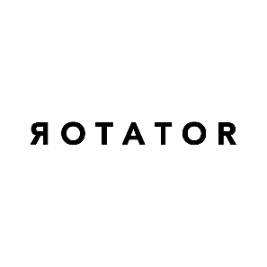

Stacey Lee Gee: ROTATOR
Stacey Lee Gee
ROTATOR
May 1 – 25, 2026
This is a meditation on palindromes as philosophy. I am using the word rotator as a lens for thinking about time, presence, and the texture of lived experience. The opening establishes the literal: a rotator turns without arriving. Then it makes the key statement; the word rotator doesn’t just describe rotation, it enacts it. You read it forward and arrive back where you started. Form and meaning are the same thing.
That line — a rotator is only stable when it’s moving; stillness breaks it — is a pivot. It inverts the usual assumption that stability means rest. For a gyroscope, a bicycle wheel, a spinning top, this is literally true. Motion is the equilibrium. Stop it and it falls.
The second half turns inward. It’s about what it feels like to be inside a life you once only imagined. And here the rotator becomes a metaphor for presence itself:
You planned for something, and then arrived inside it
But being inside it is nothing like the imagining